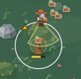

Separar machado e picareta
Equipar machado para madeira e picareta para pedra, ferro e cristal.
Caderno da oficina
Acompanhe os ajustes de coleta, as melhorias do arquipélago e os testes da próxima versão. Clique nos textos para editar.
Equipar machado para madeira e picareta para pedra, ferro e cristal.
Mostrar a inspeção apenas ao interagir com um ponto de construção.
Arrastar com o botão do meio, ajustar o zoom com a rodinha e recentralizar com Home.
Conferir cliques em árvores e rochas após mover a câmera e mudar o zoom.
Deixar o interruptor das farms automáticas com drone no canto inferior direito da tela, para o acesso ficar fácil.
Manter caminhos livres, recursos em agrupamentos variados e pontes conectadas.
Usar os novos desenhos do personagem, da banca, do armazém, das árvores e das pedras.
Adicionar vegetação, trepadeiras e elementos animados ao cenário.
Conferir se a vegetação deixa trilhas, placas e zonas de projeto fáceis de encontrar.
Dar à tela inicial uma identidade própria, usando o cenário das ilhas e o estilo artesanal do jogo como parte da composição. Simplificar o selo, o texto e os blocos de atalhos para tirar a aparência de interface genérica, mantendo a ação de iniciar ou continuar a jornada em destaque.
Fazer amanhecer, dia, entardecer e noite acompanharem a hora local do jogador. Transicionar suavemente as cores do céu e a iluminação das ilhas, mantendo recursos e caminhos legíveis. Atualizar o período ao abrir o jogo e ao voltar para a aba, inclusive na virada da meia-noite. Definir espécies e horários por ilha em uma configuração editável. Como ponto de partida, testar borboletas e pássaros de dia na Clareira do Vale, aves planando durante o dia na Doca dos Ventos, pequenos animais no começo da manhã ou no fim da tarde na Colina de Ferro e fauna noturna na Ilha de Cristal. Definir as espécies e faixas finais durante a implementação. Animar cada animal de acordo com seu comportamento, com ciclos de repouso, caminhada ou voo conforme a espécie. Fazer os animais entrarem ou saírem de cena gradualmente nas mudanças de horário. Usar a hora real para o ambiente e manter o relógio da simulação para animações, produção e respawn. Na validação, simular os quatro períodos e a virada da meia-noite, alternar de aba e conferir em diferentes níveis de zoom se as espécies corretas aparecem na ilha e no horário previstos. Stack e arquivos: TypeScript puro, Canvas 2D e Vite. Usar src/config/world.ts para as ilhas e src/rendering/world-terrain.ts para os efeitos de ambiente. Integrar o desenho em src/rendering/CanvasRenderer.ts e src/rendering/WorldRenderer.ts. Consultar src/core/GameClock.ts para separar o relógio da simulação da hora local.
Trocar o retângulo tracejado por uma sinalização que combine com o cenário, com estacas ou cordas indicando o futuro trajeto da ponte. Deixar o nome e a dica de interação [E] legíveis na entrada da ponte em diferentes níveis de zoom. Stack e arquivos: TypeScript e Canvas 2D. Revisar src/rendering/BuildingRenderer.ts e consultar src/config/buildings.ts para as dimensões dos projetos.
Sortear quando a chuva começa, quanto dura e até onde fica forte. Criar três níveis: garoa (1), chuva moderada (2) e chuva forte (3). Toda chuva começa em 1, só chega a 2 depois de passar por 1 e só chega a 3 depois de passar por 1 e 2 em ordem. Ao enfraquecer, descer pelos níveis intermediários antes de parar. Manter um clima aconchegante, com gotas e respingos, som ambiente suave e mudanças graduais de intensidade e luminosidade. Na chuva forte, usar relâmpagos ocasionais seguidos de trovões, mantendo o cenário legível. Animar os animais procurando abrigo quando começa a chover. Na chuva forte, os bichos ainda expostos podem se assustar e correr ou voar para se esconder com raios e trovões. Quando a chuva passar, fazer voltarem aos poucos, de acordo com a ilha e o horário em que cada espécie aparece. Stack e arquivos: TypeScript, Canvas 2D e Web Audio API. Integrar o clima ao relógio em src/core/GameClock.ts, ao desenho em src/rendering/CanvasRenderer.ts e src/rendering/WorldRenderer.ts, e à fauna em src/rendering/world-terrain.ts. Consultar src/config/world.ts para os horários e as espécies.
Sortear por RNG as posições iniciais de árvores, pedras, veios de ferro e cristais, gerando coordenadas dentro de cada ilha sem usar uma lista de pontos fixos. Ao quebrar um recurso, aguardar o tempo de respawn e sortear uma posição diferente da anterior para o mesmo tipo de recurso na mesma ilha. Nos dois sorteios, usar áreas caminháveis e ao alcance da coleta, deixar livres as entradas das pontes e os acessos às construções, e variar o espaçamento entre pontos isolados e pequenos grupos para evitar fileiras, simetrias e grandes aglomerados. Stack e arquivos: TypeScript. Configurar os recursos por ilha em src/config/world.ts e implementar o sorteio inicial e o respawn em src/gameplay/WorldSystem.ts, usando os limites das áreas caminháveis.
Fazer cada projeto mudar visualmente no mapa conforme o jogador deposita materiais, com transições suaves entre fundação, estrutura parcial e acabamento. Dar etapas próprias a cada tipo de obra: a fornalha ganha base, paredes e chaminé, enquanto a ponte recebe tábuas a partir da margem de entrada. Ao carregar a partida, mostrar a etapa correspondente ao progresso salvo e liberar a função da construção somente ao concluir a obra. Stack e arquivos: TypeScript e Canvas 2D. Usar o progresso existente em src/gameplay/BuildingSystem.ts para desenhar as etapas em src/rendering/BuildingRenderer.ts e integrá-las em src/rendering/CanvasRenderer.ts.
Criar vegetação que combine com cada ilha e usar detalhes do próprio ambiente, como afloramentos de rocha ou cristais, onde plantas não fizerem sentido. Melhorar especialmente a vegetação da Clareira do Vale, com mais variedade de formas, tamanhos e agrupamentos de grama, flores e arbustos. Manter a praça, as trilhas e os recursos de coleta fáceis de identificar. Stack e arquivos: TypeScript e Canvas 2D. Revisar a decoração por ilha em src/rendering/world-terrain.ts e consultar src/config/world.ts para as áreas e os pontos de coleta.
Remover a linha branca que percorre o centro dos trechos de ponte em construção, mantendo as cordas e as estacas laterais como sinalização.
Refinar o visual da serraria, da fornalha, da oficina de engrenagens, da estação de drones e do cais do dirigível, com formas e materiais que ajudem a reconhecer cada estrutura e combinem com o cenário. Desenhar cada estrutura em peças independentes, como base, suportes e componentes próprios, para que possam aparecer uma a uma conforme o jogador deposita materiais na futura construção progressiva de pontes e estações (tarefa #18).
Fazer as pontes balançarem suavemente com o vento, com variações aleatórias no movimento.
Corrigir o erro visual das nuvens, refinar sua aparência e fazer com que suas formas variem aleatoriamente.
O indicador de ataque usa uma seta amarela e um círculo branco sobre o alvo. Refinar o componente para deixá-lo mais integrado à direção de arte do jogo, mantendo legíveis a direção e a área do golpe.

Coletar madeira e pedra, construir a serraria e verificar a preparação para a primeira ponte.
Carregar um progresso anterior e conferir posição, construções e inventário após as mudanças no mapa.
Conferir joystick, golpe e interação em tela pequena.
Ensinar o básico na primeira jornada, sem diálogos ou caixas de texto longas. Usar ícones ilustrados, animações delicadas e pequenas pistas no cenário para guiar o jogador a andar, cortar madeira, quebrar pedra, recolher os recursos e depositar materiais na primeira construção. Mostrar uma ação por vez, avançar quando o jogador a realizar e adaptar os ícones aos controles de teclado, mouse ou toque. Stack e arquivos: TypeScript, Canvas 2D e interface HTML/CSS. Usar src/app/GameApp.ts para integrar o fluxo, src/ui/HUDView.ts e src/rendering/CanvasRenderer.ts para as pistas e src/input/InputManager.ts como referência dos controles.
Com o automático desbloqueado, poder refinar materiais específicos com ele desligado, do mesmo jeito de antes do desbloqueio. Definir um limite, como X tábuas, e a produção seguir sozinha até chegar nesse teto.
Hoje a venda de excedentes guarda uma quantidade fixa de cada material. Permitir que o jogador configure quanto fica reservado.
Ajustar os itens necessários para o upgrade de cada farm. Hoje, do nível 1 para o 2, a farm de ferro fica mais fácil que a de madeira.